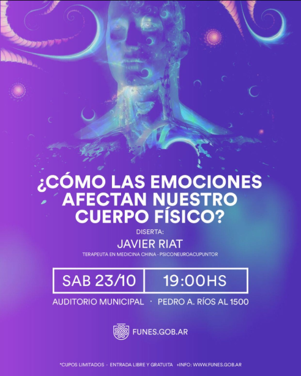
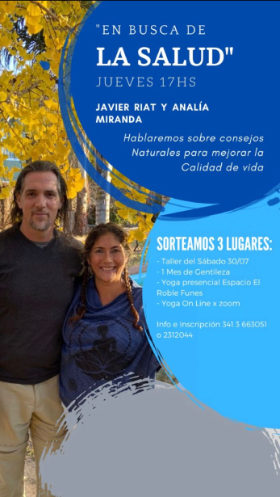
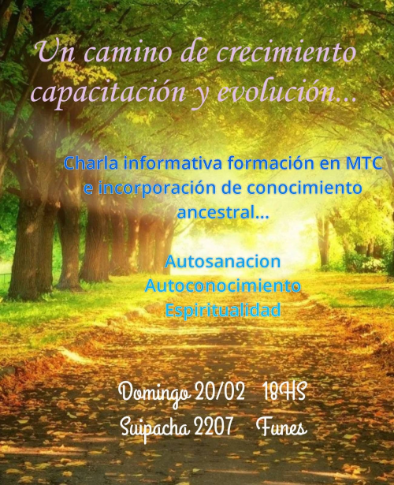

Brindamos acompañamiento en un proceso de evolución consciente donde se entregan herramientas, compartimos Sabiduría y espiritualidad… así como información que sume al bienestar del ser…
En estos tiempos tan complejos y difíciles, lo que el humano requiere es un ARKA que lo lleve por un camino de Amor y Entendimiento. Es por ello e inspirados en esta premisa que ofrecemos este espacio para quien quiera sumarse pueda embarcarse en este CAMINO DEL SER consciente. ARKA es una palabra en sánscrito que expresa nuestro objetivo “Luz divina” nuestro propósito es iluminar mentes en noción y consonancia con la realidad reinante.
Te invitamos a embarcarte en esta aventura evolutiva con todo nuestro cariño.
Camino Del Ser
Actividades del Mes


